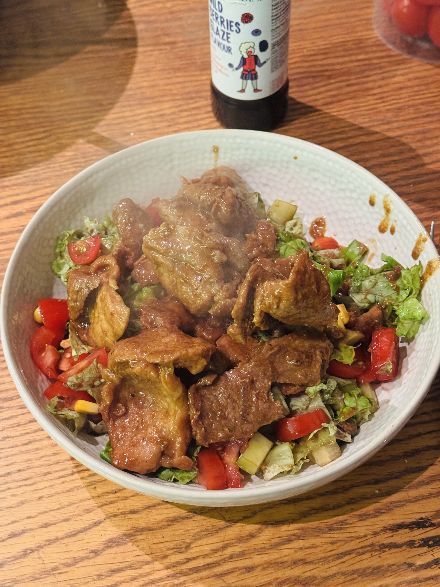

Meat Salad
Ingredients
- Pork
- Oak'a Original spice mix
- Oak'a Sweet Garlic spice mix
- Soy sauce
- Teriyaki sauce
- Water
Salad
- Lettuce
- Tomatoes
- Cucumbers
- Corn
- Sweet berry balsamic dressing
Instructions
- Cut the pork into very thin slices.
- Fry the meat with Oak'a Original and Oak'a Sweet Garlic spice mixes.
- Add soy sauce, teriyaki sauce, and water, then simmer until all the liquid has thickened.
- In a bowl, chop lettuce, tomatoes, and cucumbers, then add corn.
- Mix everything together and add sweet berry balsamic.